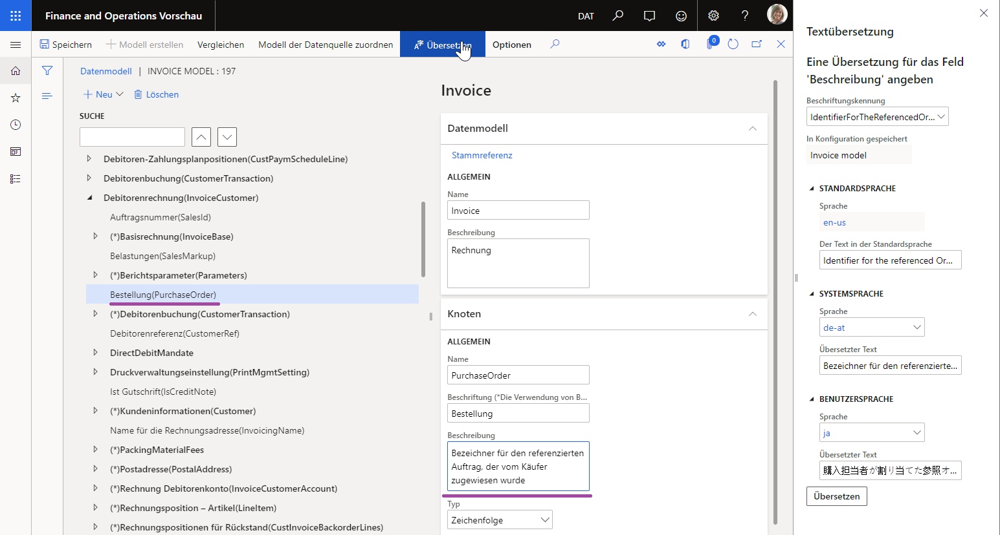
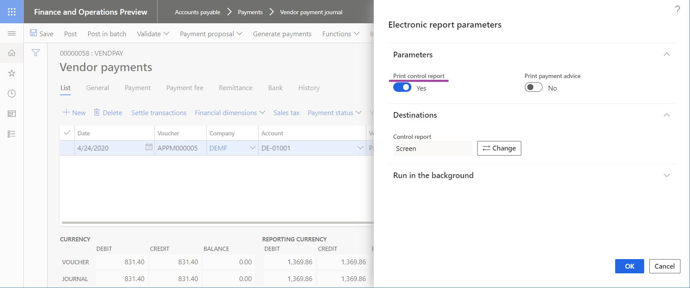
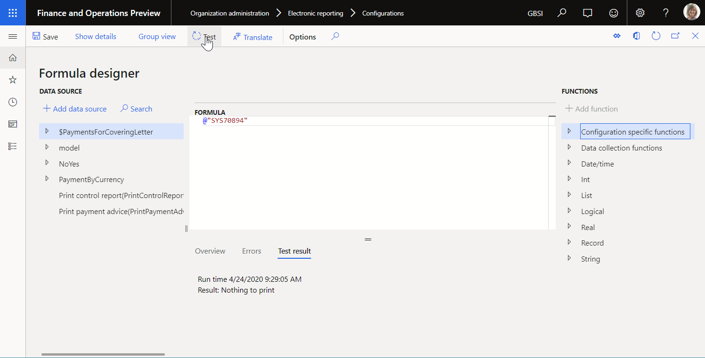
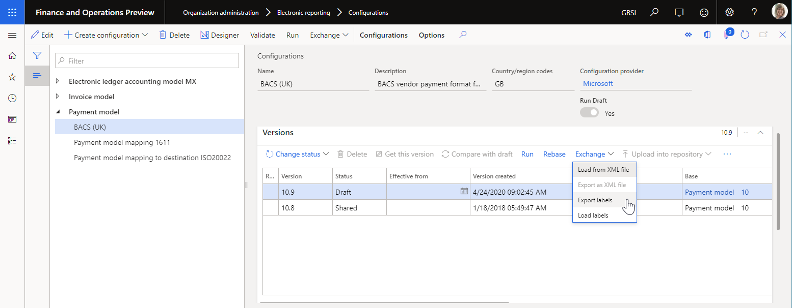

Entwerfen Sie mehrsprachige Berichte in der elektronischen Berichterstellung
[!include[banner](../includes/banner.md)]Übersicht
Als geschäftlicher Benutzer verwenden Sie Electronic Reporting (ER) zum Konfigurieren von Formaten für ausgehende Dokumente in Übereinstimmung mit den rechtlichen Anforderungen verschiedener Länder/Regionen. Wenn diese Anforderungen erfordern, dass ausgehende Dokumente in verschiedenen Sprachen für verschiedene Länder oder Regionen generiert werden, können Sie ein einzelnes ER konfigurieren Format das sprachabhängige Ressourcen enthält. Auf diese Weise können Sie das Format wiederverwenden, um ausgehende Dokumente für verschiedene Länder oder Regionen zu generieren. Möglicherweise möchten Sie auch ein einziges ER-Format verwenden, um ein ausgehendes Dokument in verschiedenen Sprachen für entsprechende Kunden, Lieferanten, Tochterunternehmen oder andere Parteien zu generieren.
Sie können ER-Datenmodelle und Modellzuordnungen als Datenquellen für konfigurierte ER-Formate konfigurieren, um den Datenfluss zu definieren, der angibt, welche Anwendungsdaten in generierten Dokumenten gespeichert werden. Als ER-Konfiguration Anbieter können Sie veröffentlichen konfigurierte Datenmodelle und Modellzuordnungen, und Formate als Komponenten einer ER-Lösung zur Generierung spezifischer ausgehender Dokumente. Sie können Kunden auch erlauben, die, um die veröffentlichte ER-Lösung hochzuladen, damit sie verwendet und angepasst werden kann. Wenn Sie erwarten, dass Kunden andere Sprachen sprechen, können Sie die ER-Komponenten so konfigurieren, dass sie sprachabhängige Ressourcen enthalten. Auf diese Weise kann der Inhalt einer bearbeitbaren ER-Komponente zur Entwurfszeit in der vom Kunden bevorzugten Sprache des Kunden dargestellt werden.
Sie können sprachabhängige Ressourcen als ER-Labels konfigurieren. Sie können diese Beschriftungen dann verwenden, um ER-Komponenten für die folgenden Zwecke zu konfigurieren:
Zur Entwurfszeit:
- Präsentieren Sie den Inhalt der konfigurierten ER-Komponenten in der vom Benutzer bevorzugten Sprache.
Zu Laufzeit:
- Generieren Sie sprachabhängige Inhalte für ausgehende Dokumente.
- Geben Sie Warn- und Fehlermeldungen in der vom Benutzer bevorzugten Sprache an.
- Eingabeaufforderung für erforderliche Felder in der vom Benutzer bevorzugten Sprache.
ER-Beschriftungens können in jeder ER Konfiguration konfiguriert werden, die verschiedene Komponenten enthält. Die Beschriftungen können unabhängig von der konfigurierten Logik von ER-Datenmodellen, ER-Modellzuordnungen und ER-Formatkomponenten verwaltet werden.
Jede ER-Beschriftung wird durch eine ID identifiziert, die im Umfang der ER-Konfiguration, die dieses Etikett enthält, eindeutig ist. Jede Beschriftung kann Beschriftungstext für jede Sprache enthalten, die in der aktuellen Instanz von Microsoft Dynamics 365 Finance unterstützt wird. Diese unterstützten Sprachen umfassen die Sprachen der bereitgestellten Anpassungen.
Erfassung
Wenn Sie ein ER-Datenmodell, eine ER-Modellzuordnung oder ein ER-Format entwerfen, wird die Option Übersetzen angezeigt, wenn Sie ein Feld auswählen, das möglicherweise den übersetzbaren Kontext enthält. Wenn Sie diese Option auswählen, können Sie das ausgewählte Feld mit einer ER-Beschriftung im Textübersetzung Bereich auswählen. Sie können eine vorhandene ER-Beschriftung auswählen oder ein neue ER-Beschriftung hinzufügen, falls es noch nicht verfügbar ist. Wenn Sie eine ER-Beschriftung auswählen oder hinzufügen, können Sie verwandten Text für jede Sprache hinzufügen, die in der aktuellen Finanzinstanz unterstützt wird.
Die folgende Abbildung zeigt, wie diese Übersetzung in einem bearbeitbaren ER-Datenmodell durchgeführt wird. In diesem Beispiel ist die Beschreibung Attribut des Felds Bestellung für das bearbeitbare Rechnungsmodell in die Sprachen Deutsch für Österreich (DE-AT) und Japanisch (JA) übersetzt.

Es kann nur Beschriftungstext für Beschriftungen übersetzt werden, die sich in einer bearbeitbaren ER-Komponente befinden. Zum Beispiel, wenn Sie Übersetzen auswählen für das Beschriftungs-Attribut einer ER-Modellzuordnungsdatenquelle und dann eine ER-Beschriftung auswählen, das sich im übergeordneten ER-Datenmodell befindet, wird der Inhalt der Beschriftung angezeigt, Sie können diese aber nicht ändern. In diesen Fällen ist das Feld Übersetzter Text nicht verfügbar, wie in der folgenden Abbildung gezeigt.

Note
Sie können die Designer nicht zum Löschen von Beschriftungen verwenden, die in eine bearbeitbare ER-Komponente eingegeben wurden.
Bereich
ER-Beschriftungen können in mehreren übersetzbaren Attributen von ER-Komponenten verwendet werden.
Datenmodellkomponente
Wenn Sie ein ER-Datenmodell konfigurieren, können Sie ER-Beschriftungen hinzufügen. Die Attribute Beschriftung und Beschreibung des Modellelements, jedes Modellfeld und jeder Modellaufzählungswert kann mit einer ER-Beschriftung verknüpft werden, das dem ER-Datenmodell hinzugefügt wird.
Wenn ein ER-Datenmodell auf diese Weise konfiguriert wird, wird sein Inhalt den Benutzern des ER-Datenmodelldesigners in der von jedem Benutzer bevorzugten Sprache angezeigt. Daher wird die Modellwartung vereinfacht. Die folgenden Abbildungen zeigen, wie diese Funktionalität für Benutzer funktioniert, für die DE-AT und JA als bevorzugte Sprache festgelegt sind.


Modellzuordnungskomponente
Da die ER-Modellzuordnung auf einem ER-Datenmodell basiert, werden die Beschriftungen der Datenmodellelemente, auf die verwiesen wird, in der vom Benutzer bevorzugten Sprache im Modellzuordnungsdesigner angezeigt. Die folgende Abbildung zeigt, wie die Bedeutung des Felds Bestellung in der bearbeitbaren Modellzuordnung anhand der Bezeichnung des Attributs Beschreibung erläutert wird, das dem konfigurierten Datenmodell hinzugefügt wurde. Beachten Sie, dass diese Beschriftung in der vom Benutzer bevorzugten Sprache angezeigt wird (in diesem Beispiel DE-AT).

Wenn das Attribut Beschriftung der Benutzereingabeparameter Datenquelle so konfiguriert ist, dass sie mit einer ER-Beschriftung verknüpft ist, wird das Parameterfeld für diese Datenquelle den Benutzern zur Laufzeit im Benutzerdialogfeld in ihrer bevorzugten Sprache angezeigt.
Formatkomponente
Wenn Sie ein ER-Format konfigurieren, können Sie ER-Beschriftungen hinzufügen. Die Attribute Beschriftung und Hilfstext jeder konfigurierten Datenquelle können mit einer ER-Beschriftung verknüpfen, die dem ER-Format hinzugefügt wird. Die Attribute Beschriftung und Beschreibung von jedem Formataufzälungswert kann auch mit einer ER-Beschriftung verknüpft werden, auf die vom bearbeitbaren ER-Format aus zugegriffen werden kann.
Note
Sie können diese Attribute auch mit einer ER-Beschriftung des übergeordneten ER-Datenmodells verknüpfen, das die Beschriftung des Modells in jedem für dieses ER-Datenmodell konfigurierten ER-Format wiederverwendet.
Wenn ein ER-Format auf diese Weise konfiguriert wird, wird sein Inhalt den Benutzern des ER-Datenmodelldesigners in der von jedem Benutzer bevorzugten Sprache angezeigt. Daher werden die Formatwartung und die Analyse der konfigurierten Logik vereinfacht.
Da ein ER-Format auf einem ER-Datenmodell basiert, werden die Beschriftungen der Datenmodellelemente, auf die verwiesen wird, in der vom Benutzer bevorzugten Sprache im Modellzuordnungsdesigner angezeigt.
Wenn das Attribut Beschriftung der Benutzereingabeparameter Datenquelle so konfiguriert ist, dass sie mit einer ER-Beschriftung verknüpft ist, wird das Parameterfeld für diese Datenquelle den Benutzern zur Laufzeit im Benutzerdialogfeld in ihrer bevorzugten Sprache angezeigt. Die folgenden Abbildungen zeigen, wie Sie das Attribut Beschriftung der Benutzereingabeparameter Datenquelle zur Entwurfszeit für eine ER-Beschriftung verknüpfen, sodass Benutzer zur Laufzeit zur Eingabe des Parameters in verschiedenen vom Benutzer bevorzugten Sprachen (angezeigt für Englisch in den USA (EN-US) und DE-AT) aufgefordert werden.


Ausdrücke
Um eine Beschriftung in einem ER Ausdruck zu verwenden, müssen Sie die Syntax verwenden @„_LABEL: X“, wobei das Präfix @ angibt an, dass der Operand auf eine Bezeichnung verweist, GER_ETIKETTE zeigt an, dass ein ER-Etikett beteiligt ist, und X ist die ER-Label-ID.

Verwenden Sie die Syntax, um auf eine Systembezeichnung (Anwendung) zu verweisen @„“, wo das Präfix @ angibt, dass der Operand auf eine Bezeichnung verweist, und X die Systembezeichnungs-ID ist.

Modellzuordnung
Ein Ausdruck einer EB-Modellzuordnung kann mithilfe einer Beschriftung konfiguriert werden. Wenn diese Zuordnung von einem EB-Format aufgerufen wird, das zum Generieren eines ausgehenden Dokuments ausgeführt wird, enthält der Kontext der Ausführung einen Sprachcode. Eine konfigurierte Ausdrucksbezeichnung wird mit dem Beschriftungstext ausgefüllt, der für die Sprache dieses Kontexts konfiguriert wurde.
Wenn eine Beschriftung, auf die verwiesen wird, keine Übersetzung für die Sprache des Formatausführungskontexts enthält, der die Modellzuordnung aufruft, wird stattdessen ein Beschriftungstext in der Sprache EN-US verwendet.
Formate
Ein Ausdruck eines EB-Formats kann mithilfe einer Beschriftung konfiguriert werden. Wenn diese Zuordnung von einem EB-Format aufgerufen wird, das zum Generieren eines ausgehenden Dokuments ausgeführt wird, enthält der Kontext der Ausführung einen Sprachcode. Eine konfigurierte Ausdrucksbezeichnung wird mit dem Beschriftungstext ausgefüllt, der für die Sprache dieses Kontexts konfiguriert wurde.


Sie können die DATEI Komponente eines EF-Formats zum Generieren des Berichts in der vom Benutzer bevorzugten Sprache konfigurieren.

Wenn Sie ein EB-Format auf diese Weise konfigurieren, wird der Bericht unter Verwendung des entsprechenden Textes der EB-Beschriftungen erstellt. Die folgenden Abbildungen zeigen Beispiele für Berichte für die Benutzersprachen EN-US und DE-AT.


Wenn eine Beschriftung, auf die verwiesen wird, keine Übersetzung für die Sprache des Formatausführungskontexts enthält, der eine Modellzuordnung aufruft, wird stattdessen ein Beschriftungstext in der Sprache EN-US verwendet.
Sprache
EB unterstützt verschiedene Möglichkeiten, eine Sprache für einen generierten Bericht anzugeben. In dem Feld Spracheinstellungen in der Registerkarte Format können Sie die folgenden Werte auswählen:
Firmenpräferenz – Erstellen Sie einen Bericht in einer vom Unternehmen angegebenen Sprache.

Benutzerpräferenz – Erstellen Sie einen Bericht in der vom Benutzer bevorzugten Sprache.
Explizit definiert – Generieren Sie einen Bericht in einer Sprache, die zur Entwurfszeit angegeben wurde.

Definiert zu Runtime – Generieren Sie einen Bericht in einer Sprache, die zur Runtime angegeben wurde. Wenn Sie diesen Wert auswählen, konfigurieren Sie einen EB-Ausdruck im Feld Sprache, der den Sprachcode für die Sprache zurückgibt, z. B. die Sprache des entsprechenden Kunden.

Übersetzung
Sie können einer bearbeitbaren EB-Komponente die erforderlichen EB-Beschriftungen hinzufügen. Wenn eine EB-Beschriftung hinzugefügt wird, kann sie auf zwei Arten übersetzt werden: manuell und automatisch.
Manuelle Übersetzung
Wenn Sie eine EB-Beschriftung im Textübersetzung Bereich hinzufügen, können Sie sie manuell in alle Sprachen übersetzen, die in der aktuellen Instanz von Finance unterstützt werden. Sie können die bevorzugte Sprache im Feld Sprache in der Systemsprache auswählen oder im Abschnitt Benutzersprache den entsprechenden Text in den entsprechenden Abschnitt im Feld Übersetzter Text eingeben und dann Übersetzen auswählen. Dieser Vorgang muss für jede erforderliche Sprache und jede von Ihnen hinzugefügte Beschriftung wiederholt werden.
Automatische Übersetzung
Die Konfiguration einer EB-Komponente erfolgt in der Entwurfsversion der EB-Konfiguration, in der sich die bearbeitbare EB-Komponente befindet.

Wie weiter oben in diesem Thema beschrieben, können Sie einer bearbeitbaren EB-Komponente die erforderlichen EB-Beschriftungen hinzufügen. Auf diese Weise können Sie den Text der EB-Beschriftung in der Sprache EN-US angeben. Anschließend können Sie die Beschriftungen der EB-Komponente mithilfe der integrierten EB-Funktion exportieren. Wählen Sie die Entwurfsversion einer EB-Konfiguration aus, die die bearbeitbare EB-Komponente enthält, und wählen Sie dann Austausch > Beschrichtung exportieren.

Sie können entweder alle Beschriftungen oder die Beschriftungen für eine einzelne Sprache exportieren, die Sie zu Beginn des Exports angegeben haben. Beschriftungen werden als Zip-Datei exportiert, die XML-Dateien enthält. Jede XML-Datei enthält Beschriftungen für eine einzelne Sprache.

Dieses Format wird für die automatische Übersetzung von Beschriftungen durch externe Übersetzungsdienste wie Dynamics 365 Translation service (This is an external link) verwendet. Wenn Sie die übersetzten Beschriftungen erhalten, können Sie sie wieder in die Entwurfsversion einer EB-Konfiguration importieren, die die EB-Komponenten enthält, denen diese Beschriftung gehören. Wählen Sie die Entwurfsversion einer EB-Konfiguration aus, die die bearbeitbare EB-Komponente enthält, und wählen Sie dann Austausch > Beschriftung laden.

Übersetzte Beschriftungen werden in die ausgewählte EB-Konfiguration importiert. Übersetzte Beschriftungen, die in dieser EB-Konfiguration vorhanden sind, werden ersetzt. Wenn eine übersetzte Beschriftung in der EB-Konfiguration fehlt, wird sie angehängt.
Lebenszyklus
Beschriftungen einer EB-Komponente, die bearbeitet werden können, werden zusammen mit anderen Inhalten für die Komponente in der entsprechenden Version einer EB-Konfiguration gespeichert.
Auf Beschriftungen einer EB-Basiskomponente kann in einer abgeleiteten Version der EB-Komponente verwiesen werden, die Sie erstellen, um Ihre Änderungen einzuführen.
Die EB-Versionierung steuert die Zuordnung der Beschriftung zu einem beliebigen Attribut in einer EB-Komponente. Änderungen an der Beschriftungszuordnung werden in der Liste der Änderungen (Delta) einer bearbeitbaren EB-Komponente aufgezeichnet, die als abgeleitete Version der bereitgestellten EB-Komponente erstellt wurde. Diese Änderungen werden überprüft, wenn eine abgeleitete Version auf eine neue Basisversion zurückgesetzt wird.
Funktionen
Dies eingebaute LISTOFFIELDS EB-Funktion kann auf EB-Beschriftungen zugreifen, die für einige Elemente von EB-Komponenten konfiguriert wurden.
Wie weiter oben in diesem Thema beschrieben, können die Attribute Beschriftung und Beschreibung von jedem Modell oder Format des EB-Enumerationswerts mit einer EB-Beschriftung verlinkt werden, auf die die entsprechende EB-Komponente Zugriff hat. Sie können einen EB-Ausdruck konfigurieren, in dem Sie die Funktion LISTOFFIELDS mithilfe der EB-Enumeration als Argument aufrufen. Dieser Ausdruck gibt eine Liste zurück, die einen Datensatz für jeden Wert einer EB-Enumeration enthält, die als Argument dieser Funktion definiert wurde. Jeder Datensatz enthält den Wert einer EB-Beschriftung, der mit einem EB-Enumerationswert verknüpft ist:
- Der Wert einer EB-Beschriftung ist mit den Attributten der Beschriftung verknüpft, die im Feld Beschriftung des zurückgegebenen Datensatzes gespeichert sind.
- Der Wert einer EB-Beschriftung ist mit den Attributten der Beschreibung verknüpft, die im Feld Beschreibung des zurückgegebenen Datensatzes gespeichert sind.